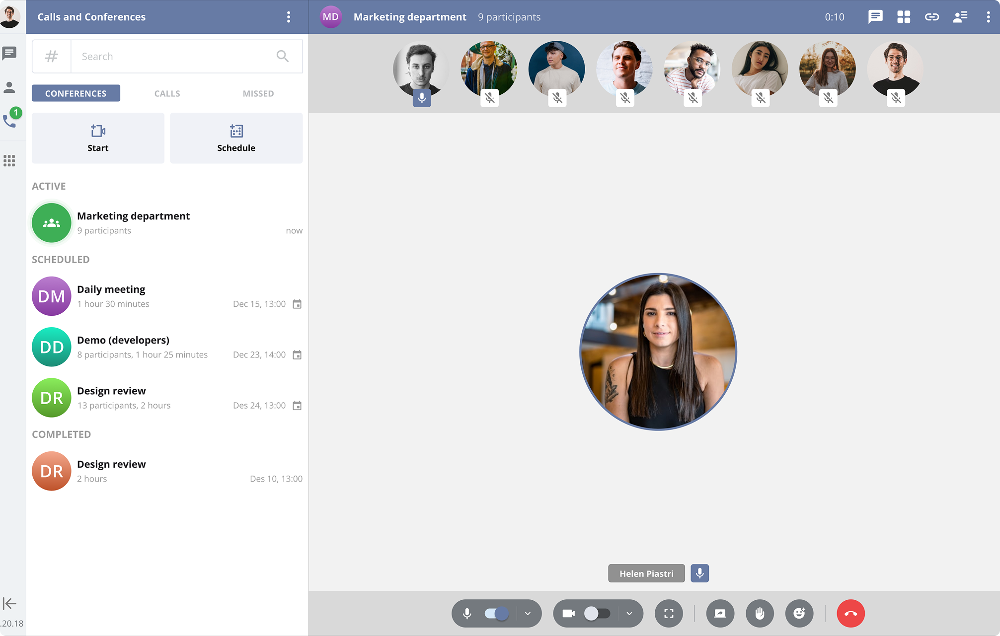
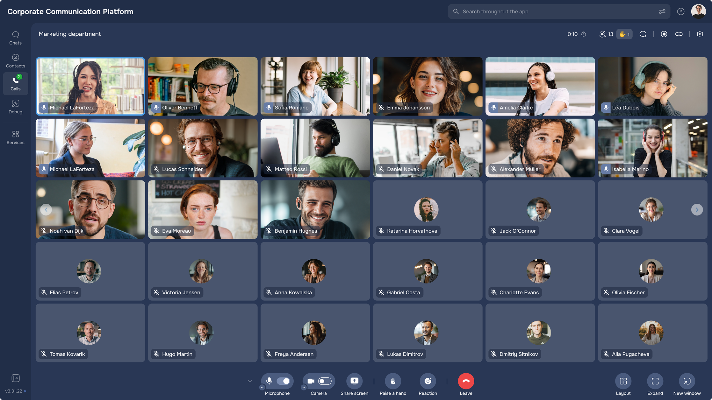
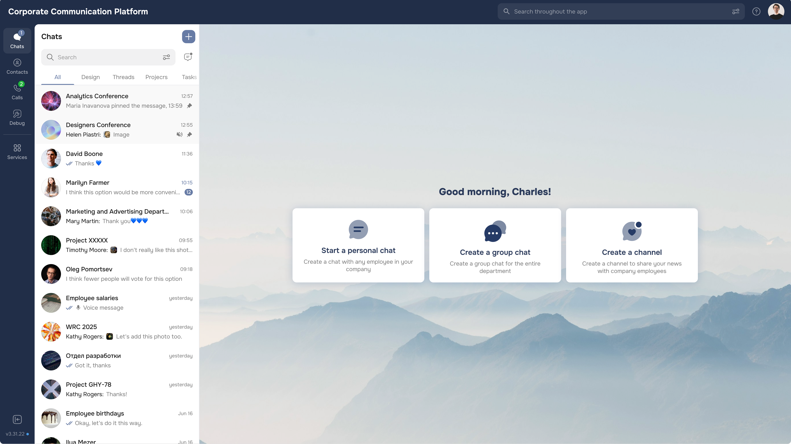

Competitive benchmarking
— Benchmarked flows and guidance patterns across major investing apps
— Looked for how competitors reduce decision fatigue for beginners
— Noted where learning and risk framing appear “in the moment”
A research-driven UX audit of the Raiffeisen Invest mobile app — focused on beginner trust, early-journey clarity, and habit formation for long-term retention.

Beginner investors often drop off after the first “bad” experience — uncertainty, risky choices, and unclear outcomes quickly erode trust. This audit looked at where the Raiffeisen Invest app breaks confidence early and why users don’t build a repeat investing habit.
The outcome was a set of product-aligned UX opportunities: onboarding and contextual guidance, smarter entry points when buying, lightweight education inside critical steps, and habit-building tools (recurring investing, reminders, and portfolio control signals).
The current experience is highly transactional: users can buy assets, but the interface doesn’t actively guide beginners through decisions, risk, or learning.
Without onboarding, contextual hints, or portfolio “health” signals, new investors can take on too much risk too quickly — and then simply stop returning after an early negative result.
— Conduct a research-based UX audit focused on novice investors.
— Identify friction in early journeys: onboarding, first purchase, and “what next”.
— Highlight gaps in trust, learning, and repeat engagement.
— Provide actionable recommendations aligned with retention and LTV.
I started with competitive benchmarking and public feedback analysis, then validated patterns through quick qualitative checks. The goal wasn’t to “collect everything”, but to isolate the trust-breaking moments and turn them into clear product opportunities.
— Benchmarked flows and guidance patterns across major investing apps
— Looked for how competitors reduce decision fatigue for beginners
— Noted where learning and risk framing appear “in the moment”
— Reviewed App Store / Google Play feedback and fintech forums
— Clustered recurring complaints into journey-level friction themes
— Prioritised issues that impact trust and early retention
— Short interviews to understand beginner mental models
— Focus on “first buy” anxiety and decision-making heuristics
— Checked which explanations actually reduce perceived risk
— Mapped gaps: onboarding, guidance, education, habit support
— Converted issues into product opportunities and UX concepts
— Anchored recommendations in retention and long-term engagement
The biggest early gap was the lack of guidance. I proposed a lightweight onboarding quiz that captures goals, time horizon, and risk tolerance — then translates it into a clear “starting strategy”. This reframes the first session from “pick random assets” to “follow a plan”, which is critical for trust.


Beginners were overwhelmed by options with no safe defaults. The concept direction here is curated suggestions based on the onboarding profile: ready-made portfolios, analyst picks, and beginner-friendly bundles — with clear explanations of “why this fits you”.


High-risk instruments were poorly explained, making negative early experiences more likely. I proposed “in-context” hints and friendly explanations during key actions (buy / sell / instrument selection) — so risk is understood at the moment it matters, without forcing users into separate education sections.
The flow didn’t encourage long-term engagement. The proposal focused on habit loops: auto top-ups, recurring investments, timely reminders, plus smart alerts for price changes and portfolio rebalancing opportunities — helping users feel in control rather than “hoping for luck”.

The concepts were validated through prototype testing with beginners. The biggest shift was making investment steps more understandable and “safer-feeling” — which directly supports retention, churn reduction, and LTV growth.
A strong UX audit goes beyond surface-level gaps — it explains why users disengage, and what needs to change to build trust and repeat behaviour.
For beginner investing, clarity is a product feature. The more the interface supports decision-making (with safe defaults, contextual explanations, and habit cues), the more sustainable retention becomes.